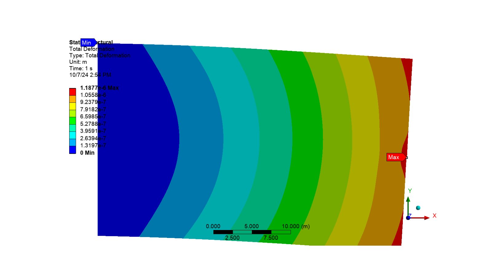
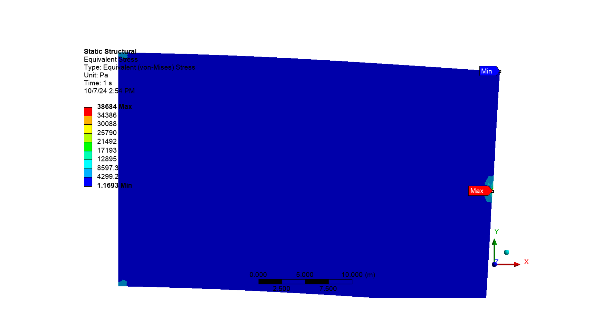
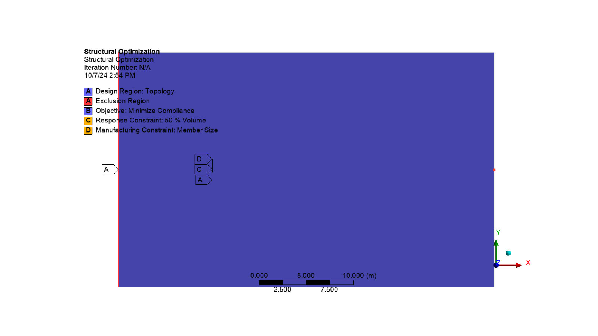
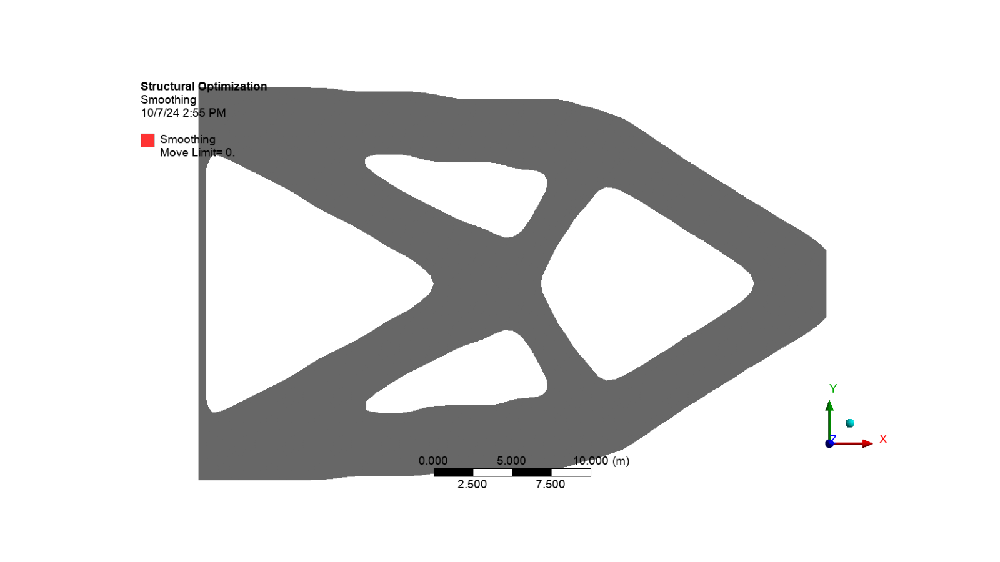

Note
Go to the end to download the full example code.
Topology optimization of a simple cantilever beam#
This example demonstrates the structural topology optimization of a simple cantilever beam. The structural analysis is performed with basic constraints and load, which is then transferred to the topology optimization.
Import necessary libraries#
import os
import ansys.mechanical.core as mech
from ansys.mechanical.core.examples import delete_downloads, download_file
from matplotlib import image as mpimg
from matplotlib import pyplot as plt
Embed Mechanical and set global variables
app = mech.App(version=242)
app.update_globals(globals())
print(app)
def display_image(image_name):
plt.figure(figsize=(16, 9))
plt.imshow(mpimg.imread(os.path.join(cwd, image_name)))
plt.xticks([])
plt.yticks([])
plt.axis("off")
plt.show()
cwd = os.path.join(os.getcwd(), "out")
Ansys Mechanical [Ansys Mechanical Enterprise]
Product Version:242
Software build date: 06/03/2024 09:35:09
Configure graphics for image export
Graphics.Camera.SetSpecificViewOrientation(ViewOrientationType.Front)
image_export_format = GraphicsImageExportFormat.PNG
settings_720p = Ansys.Mechanical.Graphics.GraphicsImageExportSettings()
settings_720p.Resolution = GraphicsResolutionType.EnhancedResolution
settings_720p.Background = GraphicsBackgroundType.White
settings_720p.Width = 1280
settings_720p.Height = 720
settings_720p.CurrentGraphicsDisplay = False
Import structural analsys#
Download .mechdat file
structural_mechdat_file = download_file(
"cantilever.mechdat", "pymechanical", "embedding"
)
app.open(structural_mechdat_file)
STRUCT = Model.Analyses[0]
STRUCT_SLN = STRUCT.Solution
STRUCT_SLN.Solve(True)
Display structural analsys results#
Total deformation
STRUCT_SLN.Children[1].Activate()
Graphics.Camera.SetFit()
Graphics.ExportImage(
os.path.join(cwd, "total_deformation.png"), image_export_format, settings_720p
)
display_image("total_deformation.png")

Equivalent stress
STRUCT_SLN.Children[2].Activate()
Graphics.Camera.SetFit()
Graphics.ExportImage(
os.path.join(cwd, "equivalent_stress.png"), image_export_format, settings_720p
)
display_image("equivalent_stress.png")

Topology optimization#
# Set MKS unit system
ExtAPI.Application.ActiveUnitSystem = MechanicalUnitSystem.StandardMKS
# Get structural analysis and link to topology optimization
TOPO_OPT = Model.AddTopologyOptimizationAnalysis()
TOPO_OPT.TransferDataFrom(STRUCT)
OPT_REG = DataModel.GetObjectsByType(DataModelObjectCategory.OptimizationRegion)[0]
OPT_REG.BoundaryCondition = BoundaryConditionType.AllLoadsAndSupports
OPT_REG.OptimizationType = OptimizationType.TopologyDensity
# Insert volume response constraint object for topology optimization
# Delete mass response constraint
MASS_CONSTRN = TOPO_OPT.Children[3]
MASS_CONSTRN.Delete()
# Add volume response constraint
VOL_CONSTRN = TOPO_OPT.AddVolumeConstraint()
# Insert member size manufacturing constraint
MEM_SIZE_MFG_CONSTRN = TOPO_OPT.AddMemberSizeManufacturingConstraint()
MEM_SIZE_MFG_CONSTRN.Minimum = ManuMemberSizeControlledType.Manual
MEM_SIZE_MFG_CONSTRN.MinSize = Quantity("2.4 [m]")
TOPO_OPT.Activate()
Graphics.Camera.SetFit()
Graphics.ExportImage(
os.path.join(cwd, "boundary_conditions.png"), image_export_format, settings_720p
)
display_image("boundary_conditions.png")

Solve#
TOPO_OPT_SLN = TOPO_OPT.Solution
TOPO_OPT_SLN.Solve(True)
Messages#
Messages = ExtAPI.Application.Messages
if Messages:
for message in Messages:
print(f"[{message.Severity}] {message.DisplayString}")
else:
print("No [Info]/[Warning]/[Error] Messages")
[Info] For geometric constraint (Mass, Volume, Center of Gravity or Moment of Inertia constraints), it is recommended to use Criterion of the upstream Measure folder (inserted from Model object).
[Warning] The default mesh size calculations have changed in 18.2. Specifically, the default min size values and/or defeature size values scale dynamically in relation to the element (max face) size. These settings could lead to a significantly different mesh, so the model will be resumed using the previous values for min size and defeature size rather than leaving those values as default.
Display results#
TOPO_OPT_SLN.Children[1].Activate()
TOPO_DENS = TOPO_OPT_SLN.Children[1]
Add smoothing to the STL
TOPO_DENS.AddSmoothing()
TOPO_OPT.Solution.EvaluateAllResults()
TOPO_DENS.Children[0].Activate()
Graphics.Camera.SetFit()
Graphics.ExportImage(
os.path.join(cwd, "topo_opitimized_smooth.png"), image_export_format, settings_720p
)
display_image("topo_opitimized_smooth.png")

Export animation
animation_export_format = (
Ansys.Mechanical.DataModel.Enums.GraphicsAnimationExportFormat.GIF
)
settings_720p = Ansys.Mechanical.Graphics.AnimationExportSettings()
settings_720p.Width = 1280
settings_720p.Height = 720
TOPO_DENS.ExportAnimation(
os.path.join(cwd, "Topo_opitimized.gif"), animation_export_format, settings_720p
)

Review the results
# Print topology density results
print("Topology Density Results")
print("Minimum Density: ", TOPO_DENS.Minimum)
print("Maximum Density: ", TOPO_DENS.Maximum)
print("Iteration Number: ", TOPO_DENS.IterationNumber)
print("Original Volume: ", TOPO_DENS.OriginalVolume.Value)
print("Final Volume: ", TOPO_DENS.FinalVolume.Value)
print("Percent Volume of Original: ", TOPO_DENS.PercentVolumeOfOriginal)
print("Original Mass: ", TOPO_DENS.OriginalMass.Value)
print("Final Mass: ", TOPO_DENS.FinalMass.Value)
print("Percent Mass of Original: ", TOPO_DENS.PercentMassOfOriginal)
Topology Density Results
Minimum Density: 0.0010000000474974513
Maximum Density: 1.0
Iteration Number: 35
Original Volume: 1000.0000054389238
Final Volume: 522.4924773573875
Percent Volume of Original: 52.24924745155908
Original Mass: 7849999.975463867
Final Mass: 4101565.9057617188
Percent Mass of Original: 52.24924737046705
Project tree#
app.print_tree()
├── Project
| ├── Model
| | ├── Geometry Imports
| | | ├── Geometry Import
| | ├── Geometry
| | | ├── Surface Body Bodies
| | | | ├── Surface Body
| | ├── Materials
| | | ├── Structural Steel
| | ├── Coordinate Systems
| | | ├── Global Coordinate System
| | | ├── Coordinate System
| | | ├── Coordinate System 2
| | | ├── Coordinate System 3
| | | ├── Coordinate System 4
| | | ├── Coordinate System 5
| | | ├── Coordinate System 6
| | | ├── Coordinate System 7
| | | ├── Coordinate System 8
| | ├── Remote Points
| | ├── Mesh
| | | ├── Face Sizing
| | ├── Named Selections
| | | ├── Selection
| | | ├── Bottom_Elements
| | | ├── Top_Elements
| | | ├── Middle1_Elements
| | | ├── Middle2_Elements
| | | ├── Left1_Elements
| | | ├── Left2_Elements
| | | ├── Right1_Elements
| | | ├── Right2_Elements
| | | ├── Optimized_Shape
| | | ├── Outside_Optimized_Shape
| | | ├── Selection 2
| | | ├── Selection 3
| | | ├── Selection 4
| | | ├── Selection 5
| | ├── Static Structural
| | | ├── Analysis Settings
| | | ├── Fixed Support
| | | ├── Nodal Force
| | | ├── Solution
| | | | ├── Solution Information
| | | | ├── Total Deformation
| | | | ├── Equivalent Stress
| | ├── Structural Optimization
| | | ├── Analysis Settings
| | | ├── Optimization Region
| | | ├── Objective
| | | ├── Response Constraint
| | | ├── Manufacturing Constraint
| | | ├── Solution
| | | | ├── Solution Information
| | | | | ├── Topology Density Tracker
| | | | ├── Topology Density
| | | | | ├── Smoothing
Cleanup#
Save project
app.save(os.path.join(cwd, "cantilever_beam_topology_optimization.mechdat"))
app.new()
Delete the example files
delete_downloads()
True
Total running time of the script: (0 minutes 40.518 seconds)